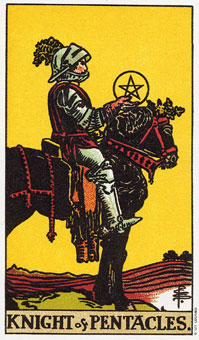

【关键词】 勤奋 现实 工作狂 拜金主义
星币骑士身姿稳健的坐于黑马上，左手紧握缰绳，右手平稳地托起一颗星币，神色坚定，是那么可值得信赖。他是一位前途光明的有为青年。他外表冷静，卓尔非凡，甚至严厉的某些古板。但那深红色盔甲代表了他坚硬的外表下火热的另一面，必要时，可是会爆发的。
稳健而认真的计划是星币骑士的标志。
星币骑士是所有骑士牌中最严肃的，且和其他骑士的好动相较，他是相当安静的。他想要很明确的知道所投资的时间、努力、体力及星币，将会给他怎么样的回报。
他喜欢做计划，并沉醉在他的计划当中，而且会毫无倦意的朝他的目标努力。虽然他的年龄通常是介于二十一到三十岁之间，但在精神层面他成熟得多，且也比他的年纪所表现得更负责任。然而，他经常于感情上显得不成熟，因为他的野心可能会妨碍到他的感情。
星币骑士代表土元素中火的部分……投入实际用途的热情、努力和精力。通常他长得高高瘦瘦的，并且个性很严肃。金钱和物质对他而言最重要的，在他觉得有物质条件的时候，才会去寻找伴侣(那是说，如果她没有很有耐心的等候他好几年的话)。
这个年轻人知道他将会在物质上获得成功，而他想选择的伴侣是，可以和他未来的事业伙伴相处愉快的人。他视爱情关系为一项长期投资。
他的眼光越过他的星币，观察着应该走哪条道路，以及每一个选择的可能结果。虽然他老早就在计划，但是在计划成形之前，他还是会纹风不动。通常他是个负责任、勤奋工作以及独立的人。他比较喜欢拥有自己的事业，因为他不喜欢有别人来指点他该做什么。他总是设法掌控他的生活和自己，常为此有点工作过了头了。
其它骑士跑出去嬉戏、恋爱、游戏及探险，星币骑士则在工作、学习及组织未来。其他骑士把注意力转移到事业时，他已远远的跑在前面了。
星币骑士通常是黑头发，有着蓝色或黑色的眼珠。他全神贯注于追求物质世界，知道快到耳顺之年，这种认真的个性才稍稍减退。
星币骑士是一张可以代表魔羯座的牌，这一点和阿尔克纳牌中的魔鬼牌意义相似。
大体上的意义
星币骑士通常指的是强化你的计划，并朝确定的目标迈进。它意味着为了实现一个目标而努力工作。
就一个人而言，这个人对于承诺非常的认真，不论是对事业、个人雄心或两性关系。通常，他相信这个格言：“如果你想做好一件事，那就自己动手吧。”
正位含义：
1.讲究效率，有能力的组织者。
2.了解现实状况，稳扎稳打实干家。
3.有责任感，值得信赖和依靠的人。
4.家庭的保护者。
5.观念有点守旧的人，一个守旧派。
逆位含义：
1.懈怠，不振作的态度面对人生。
2.思想过分守旧，顽固分子。
3.处事随性，对事物产生的热情很快冷却。
4.发展停碍不前。
两性关系上的意义
星币骑士非常信守承诺，他要嘛就是避免这种关系，知道他在事业上有所成就;否则他会想要结婚，安定下来。
他喜欢稳定或是可预料的事情，而且宁愿忍耐一种很困难的状况，也不愿意去改变它。
他在感情上可能很冷淡，虽然他的内心很温柔，但是隐藏的很好。通常他和父亲会有一些悬而未决的问题，而且可能在很小的时候，就变得很像他父亲。他是个很好的供给者，品味保守，且谨慎的维持他的名声。进入中老年之后，才懂得放松。
倒立的星币骑士
当星币骑士倒立时，可能是指他几乎对人生中所有的领域都显得相当懒散和意兴阑珊，只剩一件有兴致的事情，而这件事情他会以传教士的热诚去追求。鄙弃正立的骑士，他较少付出，冷漠而疏离。他可能憎恨权威，且经常顶撞父亲，或挑战父亲的形象。
就一般的观点来看，这张骑士倒立是在说明没有办法巩固长期的计划，或在追求进步上有所迟延。当这张牌是指一个人的时候，它可能暗示你以自我价值和贡献或成就来界定你的自我价值，而非你是个什么样的人。
星币骑士倒立意味，此刻或许你被迫去依赖别人。这或许会让你觉得不舒服，因为你可能感到自己控制不了人生及自己。这是个需要耐心的时刻。